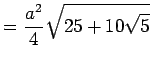
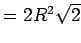
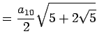

Die Eigenschaften einiger ausgewählter regelmäßiger konvexer Vielecke sind in der folgenden Tabelle zusammengefaßt.
| Seitenlänge a | Umkreisradius R | Inkreisradius r | Flächeninhalt S | |
| 3-Eck | ||||
| 5-Eck |  | |||
| 6-Eck | ||||
| 8-Eck | ||||
 |
 | |||
| 10-Eck |  | |||
Im folgenden Beispiel erfahren das Fünfeck und das Pentagramm eine spezielle Betrachtung, weil vermutlich an ihnen durch HIPPASOS von Metapont um 400 v. u. Z. die irrationalen Zahlen entdeckt wurden.
| Beispiel |
|
Die Diagonalen des regelmäßigen Fünfecks bilden einen Stern, das Pentagramm, dessen Inneres wieder ein regelmäßiges Fünfeck bildet.
Im regelmäßigen konvexen Fünfeck verhalten sich die Diagonale zur Seite wie sich die Seite zu ,,Diagonale - Seite`` verhalten: , wobei a2 =a0-a1 ist. |